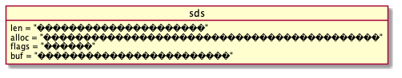

redis源码阅读之字符串
1 前言
我一直想阅读一个数据库的源码，但是一直没有动手。一是数据库源码一般比较大，阅读起来比较困难。二是自己能力欠缺，无处着手。这对我是非常大的遗憾，阅读源码是程序要一个非常重要的能力，而自己似乎并没有太大的提升，所以有时候还有点小焦虑。 但是redis给了我一个机会让我慢慢起步,选择redis主要有四个好处:
- redis的源码比较小，src目录的文件只有七十多个.c文件，其他是.h文件，一共也就一百多个。
- redis在工作中使用的比较多，各种姿势已经了解。也是一个契机深入理解。
- 黄健宏老师写的书《redis设计与实现》提供了足够多的信息，以至于一段时间我认为读了此书后都不需要再读源码了。
- redis源码干净利落，注释非常详尽，c语言的中的奇淫技巧使用比较少，容易阅读。
阅读源码是一个循序渐进的过程。我并不能一下子就突然读完，在我写这篇blog的时候也是刚开始阅读，希望blog能让我一直坚持下去。 字符串在redis中用的非常多，key，value大多都是string类型,可以说string是所有类型的基础类型也不为过 例如:。
127.0.0.1:6379> set test helloworld
OK
127.0.0.1:6379> get test
"helloworld"
127.0.0.1:6379> type test
string
127.0.0.1:6379>
2 字符串的结构
在redis中字符串的源码主要在sds.c, sds.h这两个文件中。sds.h中定义了字符串的结构跟一些简单的宏，操作。
struct __attribute__ ((__packed__)) sdshdr5 { //标识，3位用于类型，5位用于长度，在实际中sdshdr5这个类型不会使用 unsigned char flags; /* 3 lsb of type, and 5 msb of string length */ //实际存储字符串的地方 char buf[]; }; struct __attribute__ ((__packed__)) sdshdr8 { //被使用的长度 uint8_t len; /* used */ //除去头跟空终止符分配的空间 uint8_t alloc; /* excluding the header and null terminator */ //标识字符，3位用于类型，5位未使用 unsigned char flags; /* 3 lsb of type, 5 unused bits */ //使用存储字符串的地方 char buf[]; }; struct __attribute__ ((__packed__)) sdshdr16 { uint16_t len; /* used */ uint16_t alloc; /* excluding the header and null terminator */ unsigned char flags; /* 3 lsb of type, 5 unused bits */ char buf[]; }; struct __attribute__ ((__packed__)) sdshdr32 { uint32_t len; /* used */ uint32_t alloc; /* excluding the header and null terminator */ unsigned char flags; /* 3 lsb of type, 5 unused bits */ char buf[]; }; struct __attribute__ ((__packed__)) sdshdr64 { uint64_t len; /* used */ uint64_t alloc; /* excluding the header and null terminator */ unsigned char flags; /* 3 lsb of type, 5 unused bits */ char buf[]; };
使用图形表示大概是这样.

在redis中还有个类型sds。在各种字符串操作中使用的都是这个类型。下面是它的类型声明:
typedef char *sds;
sds实际上就是char*类型，那么这个sds到底是用来干嘛的呢？其实sds就是执行sdshdr中的buf, redis为了能c中的字符串无缝操作,把sds指向了buf，这样，字符串的头部信息在它的左边，数据信息在它的右边。但是分配的时候，还是分配头部+数据。第一次看到这样的操作方式，总感觉担心左边的头部信息不会释放，哈哈。
3 字符串的操作
字符串操作太多，我就不一一列出来了，只看一些基本的吧。
//创建新的字符串 sds sdsnewlen(const void *init, size_t initlen) { void *sh; sds s; //根据长度获取sds的类型 char type = sdsReqType(initlen); /* Empty strings are usually created in order to append. Use type 8 * since type 5 is not good at this. */ //sds_type_5这个类型是不会使用的啦. if (type == SDS_TYPE_5 && initlen == 0) type = SDS_TYPE_8; //根据类型得到头部的长度，还记得前面的类型声明吗？ int hdrlen = sdsHdrSize(type); unsigned char *fp; /* flags pointer. */ //分配空间: 头部大小+数据大小+'\0'（空终止符，为了c语言字符串兼容） sh = s_malloc(hdrlen+initlen+1); //如果没有初始化数据之间全部清空 if (!init) memset(sh, 0, hdrlen+initlen+1); if (sh == NULL) return NULL; //s指向buf, 返回的sds就是这个s s = (char*)sh+hdrlen; fp = ((unsigned char*)s)-1; switch(type) { case SDS_TYPE_5: { //记得吗？对于SDS_TYPE_5类型，长度是放在flags字段里的 *fp = type | (initlen << SDS_TYPE_BITS); break; } case SDS_TYPE_8: { //这里是新定义了一个相对应类型的sh SDS_HDR_VAR(8,s); //设置长度 sh->len = initlen; //设置分配的大小(排查头部跟空终止符) sh->alloc = initlen; //设置类型 *fp = type; break; } case SDS_TYPE_16: { SDS_HDR_VAR(16,s); sh->len = initlen; sh->alloc = initlen; *fp = type; break; } case SDS_TYPE_32: { SDS_HDR_VAR(32,s); sh->len = initlen; sh->alloc = initlen; *fp = type; break; } case SDS_TYPE_64: { SDS_HDR_VAR(64,s); sh->len = initlen; sh->alloc = initlen; *fp = type; break; } } //如果有初始化值，则执行memcpy复制数据 if (initlen && init) memcpy(s, init, initlen); //设置终止符,这里并不会有两个'\0',因为前面只复制了initlen个字符 s[initlen] = '\0'; //返回sds，实际执行buf return s; } void sdsfree(sds s) { if (s == NULL) return; //得到真正的头部指向，然后释放 s_free((char*)s-sdsHdrSize(s[-1])); } //字符串增长 sds sdsMakeRoomFor(sds s, size_t addlen) { void *sh, *newsh; //获取剩余的空间，其实就是alloc-len size_t avail = sdsavail(s); size_t len, newlen; //保持老的类型,因为字符串空间加长后有可能类型变化 char type, oldtype = s[-1] & SDS_TYPE_MASK; int hdrlen; /* Return ASAP if there is enough space left. */ //如果空间足够直接返回 if (avail >= addlen) return s; len = sdslen(s); sh = (char*)s-sdsHdrSize(oldtype); newlen = (len+addlen); //如果小于1024*1024直接翻倍空间 if (newlen < SDS_MAX_PREALLOC) newlen *= 2; else newlen += SDS_MAX_PREALLOC; //根据长度获取sds的类型 type = sdsReqType(newlen); /* Don't use type 5: the user is appending to the string and type 5 is * not able to remember empty space, so sdsMakeRoomFor() must be called * at every appending operation. */ if (type == SDS_TYPE_5) type = SDS_TYPE_8; //获取头部长度 hdrlen = sdsHdrSize(type); if (oldtype==type) { //如果类型不变 newsh = s_realloc(sh, hdrlen+newlen+1); if (newsh == NULL) return NULL; s = (char*)newsh+hdrlen; } else { /* Since the header size changes, need to move the string forward, * and can't use realloc */ //如果类型已经改变 newsh = s_malloc(hdrlen+newlen+1); if (newsh == NULL) return NULL; //复制数据 memcpy((char*)newsh+hdrlen, s, len+1); //释放老的数据 s_free(sh); s = (char*)newsh+hdrlen; //设置类型s[-1]实际执行flags s[-1] = type; //设置新字符串的长度 sdssetlen(s, len); } //设置新字符串分配空间大小 sdssetalloc(s, newlen); return s; } //缩小空间,主要根据len字段重新分配空间 sds sdsRemoveFreeSpace(sds s) { void *sh, *newsh; char type, oldtype = s[-1] & SDS_TYPE_MASK; int hdrlen; //获取长度 size_t len = sdslen(s); sh = (char*)s-sdsHdrSize(oldtype); //根据长度获取sds的类型 type = sdsReqType(len); //获取头部长度 hdrlen = sdsHdrSize(type); if (oldtype==type) { newsh = s_realloc(sh, hdrlen+len+1); if (newsh == NULL) return NULL; s = (char*)newsh+hdrlen; } else { //类型改变 newsh = s_malloc(hdrlen+len+1); if (newsh == NULL) return NULL; memcpy((char*)newsh+hdrlen, s, len+1); s_free(sh); s = (char*)newsh+hdrlen; s[-1] = type; sdssetlen(s, len); } //分配空间跟长度一样 sdssetalloc(s, len); return s; }
4 其他
- https://redis.io/topics/data-types-intro 官方文件介绍数据类型.
- https://github.com/antirez/redis/blob/unstable/README.md 官网readme文件，其中有部分会介绍源码结构
- https://github.com/huangz1990/blog/blob/master/diary/2014/how-to-read-redis-source-code.rst 黄健宏老师教你怎么读redis源码